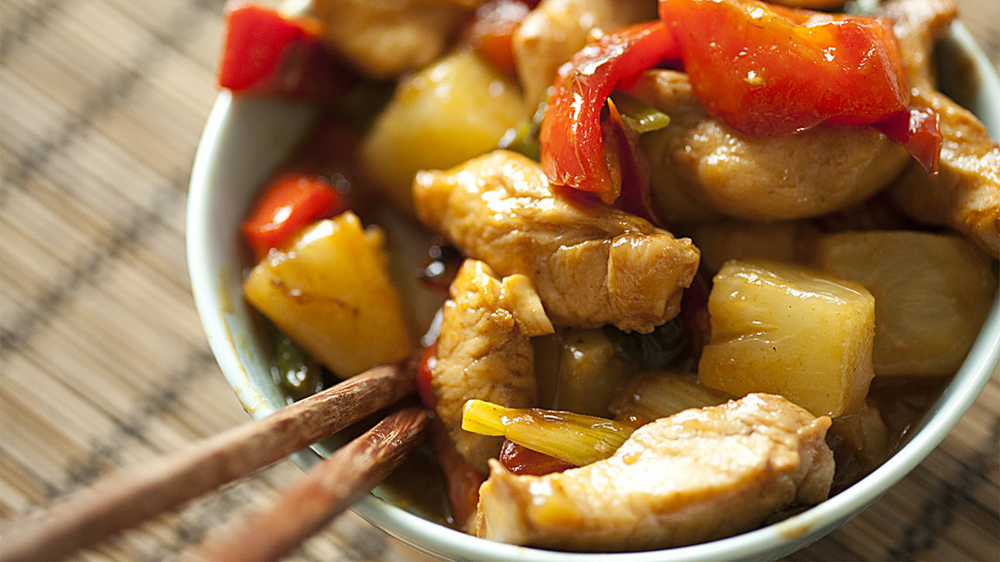

Pineapple Chicken

4 Servings
Ingredients
- 2 tsp canola or sesame oil
- 1 (10-‐oz) package frozen broccoli (or stir-‐fry vegetable mix), thawed*
- 1/2 C stir-‐fry sauce
- 1/4 C pineapple juice, use reserved juice from canned pineapple
- 1/4 tsp garlic powder
- 1/4 tsp crushed red pepper (optional – use if you like it hot!)
- 1 (15-‐oz) can pineapple chunks or tidbits, drained (reserve the juice!)
- 2 C diced cooked chicken or 2 (10-‐oz) cans chicken breast, drained and flaked
Method
- 1. Heat the oil in a large skillet over medium high heat. Add all ingredients
EXCEPT the pineapple and chicken. Cook and stir until heated through, 5 – 6 min.
- 2. Add pineapple and chicken; cook another 2 minutes.
- Serve over instant brown rice or whole wheat pasta.
- Thaw frozen vegetables in the microwave or by holding the package under
cold running water for several minutes.